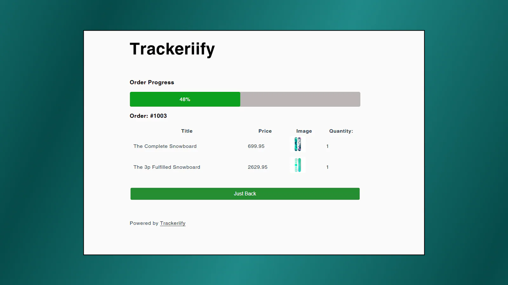
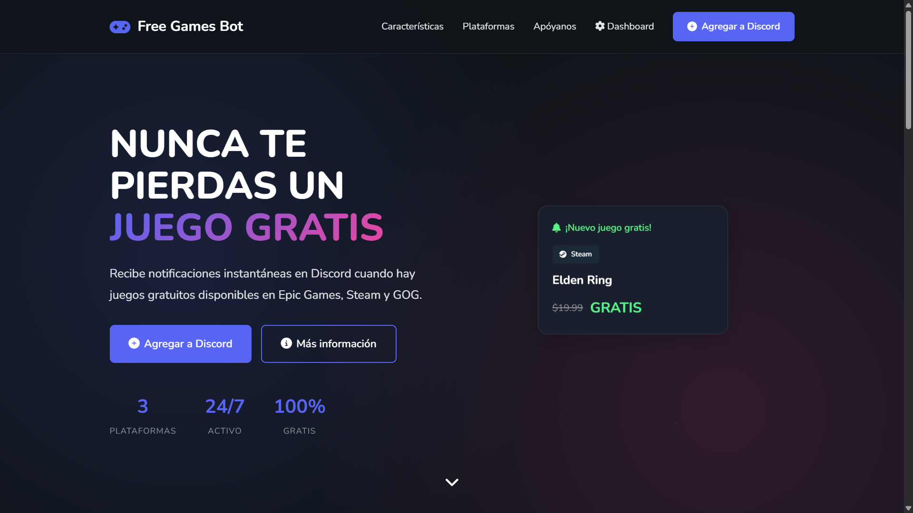
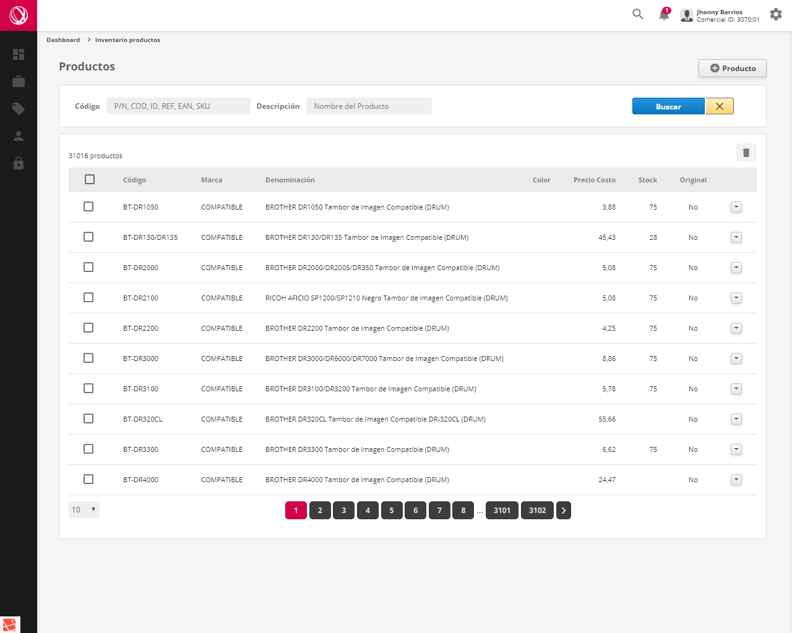

Trackeriify

Trackeriify
Shopify App para rastrear envíos de productos, proporcionando a los usuarios actualizaciones sobre el estado de sus pedidos.
Soy un Desarrollador Web Full-Stack apasionado por crear soluciones tecnológicas innovadoras y eficientes.
Una selección de mis trabajos más recientes.

Shopify App para rastrear envíos de productos, proporcionando a los usuarios actualizaciones sobre el estado de sus pedidos.

Bot de Discord que permite a los recibir notificaciones automáticas sobre juegos gratuitos disponibles en diversas plataformas.

Aplicación web para la gestión y control de inventarios en pequeñas y medianas empresas.
Quién está detrás de este sitio.
¡Hola! Soy Jhonny B Sandrea, un desarrollador de software con — años de experiencia. Me especializo en Desarrollo backend con Laravel, pero siempre estoy aprendiendo y explorando nuevas tecnologías.
Mi objetivo es construir productos que no solo sean funcionales y escalables, sino que también ofrezcan una experiencia de usuario excepcional. Me encanta resolver problemas complejos y colaborar en equipo para llevar ideas desde la concepción hasta el despliegue.
Cuando no estoy programando, disfruto viendo películas, aprendiendo nuevas habilidades y explorando el mundo de la tecnología.
Encuéntrame en mis redes y mándame un mensaje.